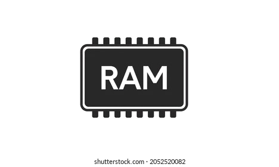
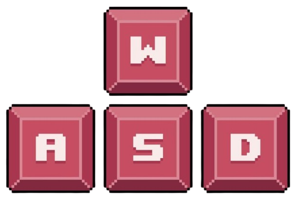

Motion Verse
Motion Verse
Motion Verse
Motion Verse
Переміщення об'єкта по осях X та Y.
Зміна масштабу та розміру об'єкта.
Обертання об'єкта навколо осі.
Регулювання прозорості (Transparency).
Відображення всіх активних ключових точок.

Залиш для інших програм мінімум 4-8 GB. Все інше віддай для After Effects.

Навчись перемикати вікна клавішами ( ~ ) (тильда) — це твій головний шлях до швидкості.

Виділи мінімум 50-100 GB на швидкому SSD для плавного відтворення.
Чому важливо налаштувати Disk Cache та виділити достатньо оперативної пам'яті для After Effects ще до початку роботи над проектом?